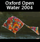

Skip Navigation | Home | Contact | Picture Gallery | Projects





The Ice Garden
The Ice Garden
Clarendon Quad, Central Oxford
Commissioning Producer : Produced With OOMF!
Creative Artists : Cape Farewell
The Ice Garden was presented as an installation event in central Oxford by Produced With OOMF!. The team set out to create a physical environment which provided a creative and accessible comment on climate change. Artists who had travelled to the High Arctic as part of the Cape Farewell expeditions were invited to present a range of artworks inspired by their voyages.
Over four December days in 2005 The Ice Garden featured ten two-metre columns of ice designed by Peter Clegg and Antony Gormley, sound installations from Max Eastley, ice projections from David Buckland, text written by Ian McEwan, Ice Lens carving and thermal imaging by Heather Ackroyd and Dan Harvey and "Here Today" a neon sculpture by Kathy Barber.
The columns signalled the volume of carbon dioxide generated by each person in the UK each year. On a sheet of water messages and images from the frozen Arctic appeared fleetingly. Projected onto the walls of the Bodlian a chilling call to action. Elsewhere in the Clarendon Quad a fragment of glacier, complete with pieces of earth emits the sound of disintegrating ice.
"We are shaped by our history and biology to frame our plans within the short term, withing the scale of a single lifetime. Now we are asked to address the well-being of unborn individuals we will never meet and who, contrary to the usual terms of human interaction, will not be returning the favour" Ian McEwan 2005
For Produced With OOMF!
Producer : Catherine Boyd
Executive Producers : Rosemary Richards and Tish Francis
For Cape Farewell
Director : David Buckland
Project Manager : Vicky Long
The Ice Garden was commissioned by 'Produced With OOMF!' and formed part of Evolving City, a year-long programme of events coordinated by Oxford Inspires, which was made possible with lottery money from the Millennium Commission and Arts Council England South East through the Urban Cultural Programme, plus additional contributions from Oxford City Council, Oxfordshire County Council and SEEDA.
Cape Farewell has funding from Arts Council England and is supported by the Calouse Gulbenkian Foundation. This event would not have been possible without the extensive support of the University of Oxford, the Bodleian Library and the Sheldonian Theatre. Our thanks to the individuals from these and all other organisations who made the Ice Garden a reality on four freezing days in December 2005.